One scene, 14 styles · /Users/huangjien/workspace/ai-video-factory/output/style-review-20261026
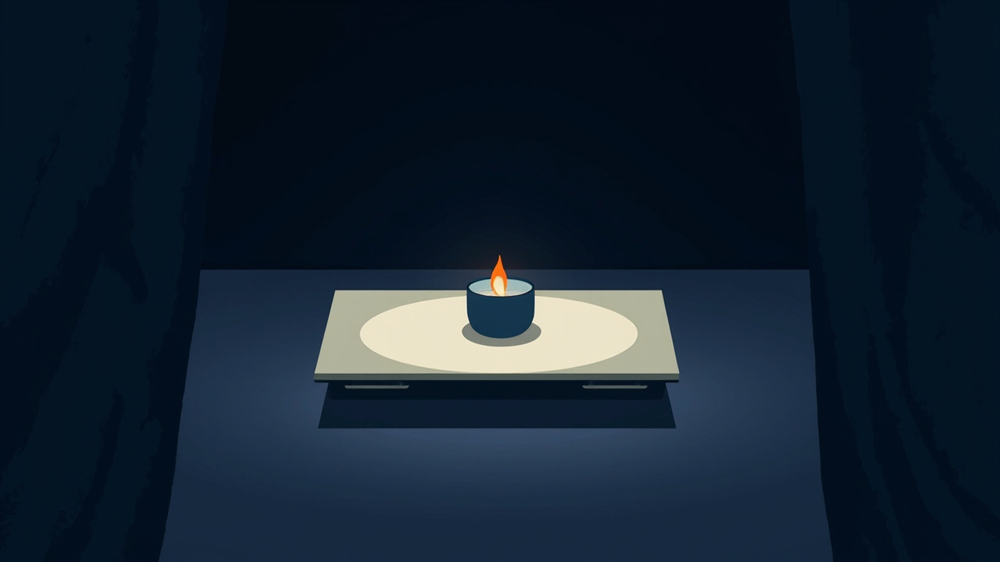
1. Subject: A bronze wine cup and a jade ring broken by a single notch, resting before an empty guest mat; late Qin China, 206 BCE, the Chu army camp at Hongmen. 2. Scene: Inside the command tent on a winter night; the banquet is laid, the guest's mat left empty, and a lone candle flame bows low and rights itself in the night draft. 3. Composition: Medium shot, three-quarter view slightly above the table; foreground: heavy dark drapes hanging down both frame edges; middle ground: low lacquered table centered with cup, jade jue and flame; background: tent depth as flat navy shadow. 4. Lighting: One warm amber candle flame as the sole source from frame left, flat deep-navy ambient fill, a single hard-edged flat shadow under each vessel cast to the right. 5. Style: Flat vector illustration, clean geometric shapes, solid fills; deep navy #16213E drapes and tent ground, slate blue #4A6FA5 bronze cup, off-white #F4F1EA jade and mat, amber #E8A33D reserved for the flame alone; no gradients. 6. Constraints: Keep the lower third and outer edges quiet for overlays; no people in frame, no readable marks or seals, no modern objects; cup, jade and flame fully insi flat vector illustration, clean geometric shapes, solid fills, simple silhouettes, limited 4-color palette of deep navy slate blue warm amber and off-white, dark ground, no gradients, no texture, no 3D rendering, no glossy surfaces, minimalist composition, generous negative space, quiet lower third, no text, no letters, no words
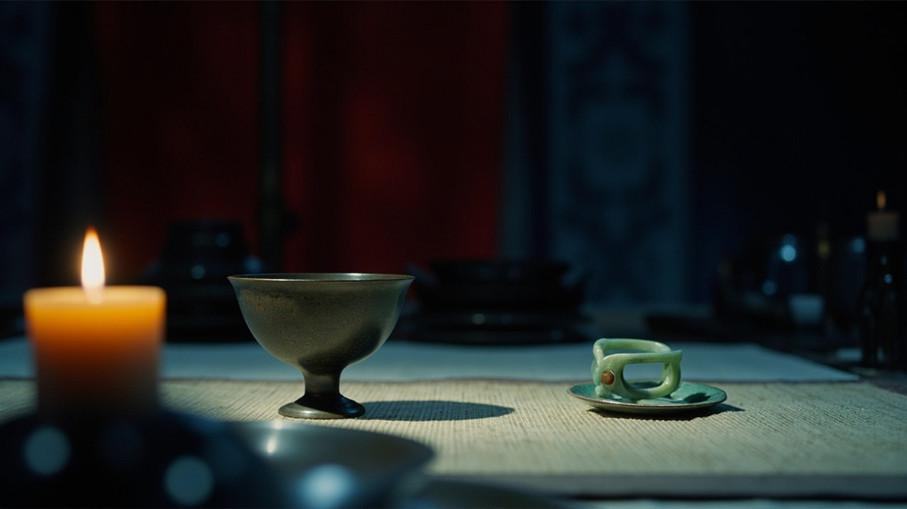
1. Subject: Hongmen, 206 BCE China at the Qin–Han transition: a round bronze wine goblet and a gap-notched jade jue ring resting before an empty banquet mat. 2. Scene: night inside the Chu command tent at a winter feast; the long low table is fully set, one mat left vacant, a candle flame bowing low in the draft. 3. Composition: medium close-up along the table, goblet and jue in the left third filling a quarter of the frame; foreground: blurred bronze dishes lower left; middle ground: goblet, jue, candle; background: vacant mat and tent pole in shadow between dark red curtains. 4. Lighting: one warm candle low at the table as sole source, raking right to left across the bronze; cool ink-blue shadow fills the tent beyond. 5. Style: editorial illustration, visible brushwork and paper grain, muted bronze sheen; palette locked to desaturated ink blue #3C4A5E, warm paper cream #EDE6D8, rust accent #B5533C curtains and flame. 6. Constraints: keep the lower third quiet, plain table surface for captions; no people in frame, the seat stays empty, no readable inscriptions or seals, no chairs, no modern objects. editorial illustration, single visual metaphor, stylized simplified human figures, muted low-saturation palette of ink blue and warm paper cream with a single rust accent, subtle paper texture and visible brushwork, calm sophisticated mood, storybook composition, layered depth, quiet lower third, no text, no letters, no handwriting
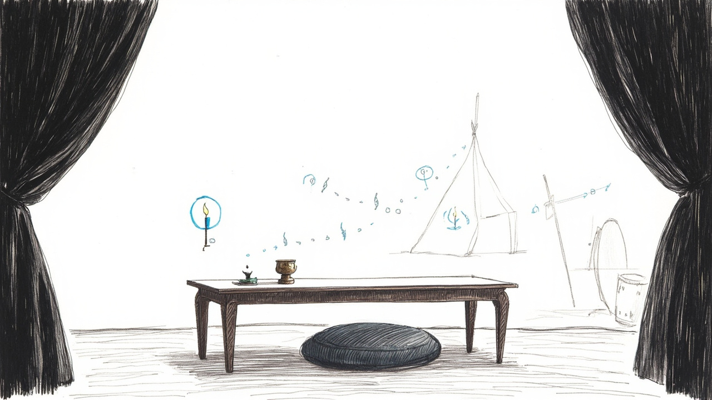
1. Subject: A marker-drawn still life — Hongmen, Chu war camp, 206 BCE China: a bronze wine cup and a gapped jade ring on a long low lacquered table before one empty floor cushion. 2. Scene: The commander's campaign tent at night, laid for the famous banquet; a drawn candle flame bends low and springs back in a draft; a distant watch drum stands at the tent wall. 3. Composition: medium shot, the table centered spanning the middle third; foreground: heavy curtain drapes framing both left and right edges; middle ground: cup, gapped jade circled in blue, empty cushion; background: a tent pole and small drum in wide white space. 4. Lighting: even, shadowless office light across the whole board; the candle flame is a drawn outline shape only, casting no glow and no shadow. 5. Style: thick chisel-tip dry-erase marker, confident single-pass strokes, rounded end-caps, wavering imperf hand-drawn whiteboard diagram in thick chisel-tip dry-erase marker, one focal circled or boxed shape with solid arrows and dotted connectors radiating outward, confident single-pass slightly wobbly strokes, black ink on clean board white with one mid-blue accent drawn on top of the key path, sticks-and-circle figures, strategy-consulting live-teaching sketch aesthetic, sparse composition, generous white space, no shading, no fills, no chalk dust, no smudges, no parchment, no manuscript, no ink wash, no watercolor, quiet lower third, no text, no readable letters, no words, no labels, no signs, no captions
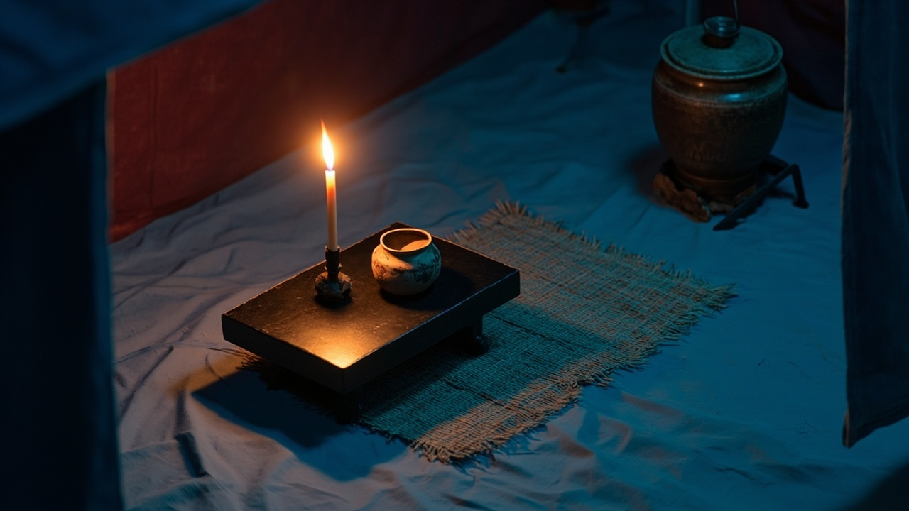
1. Subject: A bronze wine zhi and a chipped jade jue on a low black-lacquer table before an empty reed mat, in a Chu commander's great tent at Hongmen, 206 BCE. 2. Scene: Winter night in the camp; the guest's place lies vacant as the candle flame bends low and springs back in a draft; watch drums thud faintly beyond the tent walls. 3. Composition: Isometric 30-degree medium shot; the table centered in the middle third. Foreground: heavy hangings edging both sides; middle ground: table with zhi, jue and empty mat; background: bronze lamp and war drum sinking into shadowed depth. 4. Lighting: Soft warm light from the candle flame at upper left, amber glow grazing the bronze and jade, short subtle contact shadows beneath each object, cool deep-navy ambient in the recesses. 5. Style: Clean isometric illustration, flat matte surfaces, strictly parallel edges, no perspective convergence; locked palette of deep navy #20304A, muted teal #73A99B jade, warm amber #E8A33D flame, off-white #F4F1EA; navy hangings warming to wine-red near the flame. 6. Constraints: Keep the lower third and outer edges quiet for ov isometric illustration, fixed 30-degree axonometric camera, vertical edges, parallel lines with no perspective convergence, consistent object scale, clean illustrated surfaces, limited palette of deep navy muted teal warm amber and off-white, amber focal accent, compact layered system, soft upper-left light, short contact shadows, quiet lower third, no text, no labels, no letters
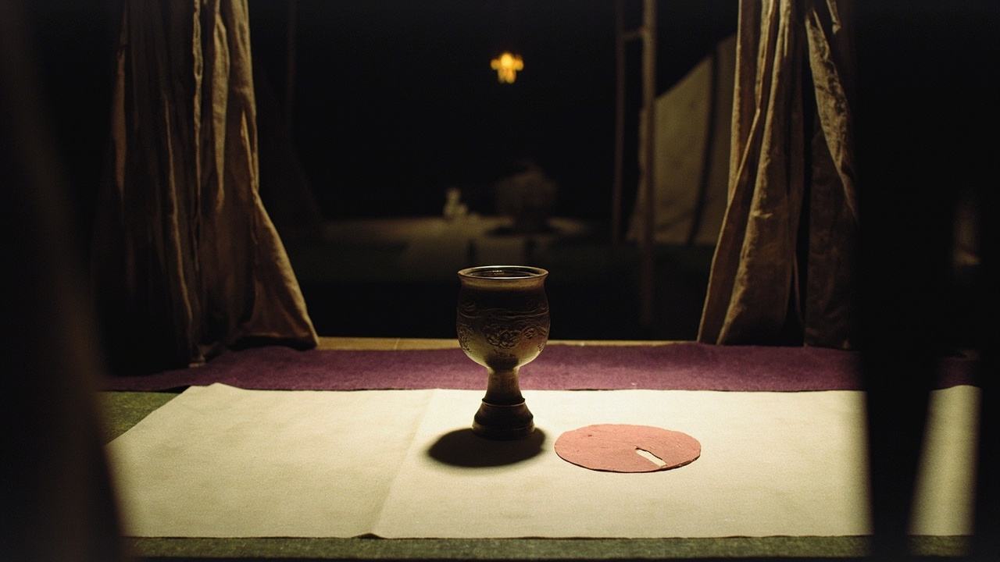
1. Subject: China, 206 BCE, Xiang Yu's Chu camp at Hongmen — a bronze zhi wine goblet and a notched jade jue disc resting before an empty felt mat on a long low lacquered table. 2. Scene: Deep inside the warlord's campaign tent on a winter night; the guest's seat stands vacant while a single candle flame bows low and rights itself in the night wind. 3. Composition: Low-angle medium shot, goblet and jue centered and filling the central third; foreground: dark curtain drapes framing both edges; middle ground: the laden table and vacant mat; background: a tent pole and hanging lantern fading into shadow. 4. Lighting: Soft, even light from the upper left, as from an off-frame candle at the table's head; only shallow shadows beneath each paper layer — no glow, no gradients. 5. Style: Paper-cut collage — layered cut and torn paper, crisp edges, faint fibre, shallow overlaps; warm cream #F2E9D8 ground, muted sage #82977B jue and mat, dusty rose #C98272 flame accent, deep plum #493A4B goblet, drapes and shadow. 6. Constraints: Keep the lower third and outer edges quiet for overlays; the mat stays empty — no figures or hands; no readable writing or layered paper-cut collage, cut and torn paper edges, subtle paper fibers, shallow overlapping layers and soft upper-left shadows, bold simplified silhouettes, locked palette of warm cream muted sage dusty rose and deep plum, dusty rose focal accent, tactile handmade surfaces, quiet lower third, no text, no letters, no labels, no handwriting
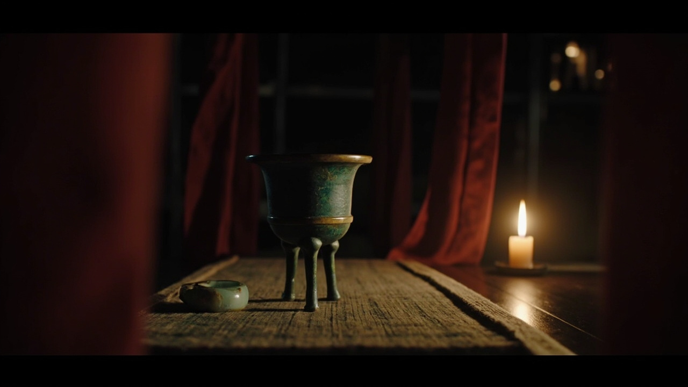
1. Subject: A bronze three-legged wine goblet and a chipped jade ring resting before an empty seat mat on a long lacquered table; China, 206 BCE, the Chu army camp at Hongmen. 2. Scene: Night inside the Chu commander's grand campaign tent; a candle flame bows low and rights itself in the draught; watch drums beat faintly beyond the drapery. 3. Composition: Medium close-up, three-quarter view, vessels centered filling a third of the frame; foreground: dark red drapery framing both side edges; middle ground: goblet, jade ring, empty mat; background: tent poles dissolving into shadow. 4. Lighting: single warm candle on the table at camera right, its flame leaning in the draught; deep neutral shadows, faint amber highlight along the bronze rim. 5. Style: photorealistic cinematic still; green-patinated bronze, pale worn jade with a fresh chip, matte black lacquer, coarse mat weave; natural tones, deep neutral shadows, warm highlights, restrained teal accent. 6. Constraints: keep the lower third and outer edges quiet for overlays; no people in frame; no readable inscriptions, seals or markings; no glassware, no m photorealistic cinematic still, recognizable realistic subject with fine material detail, prominent sharply readable focal subject, natural skin and material colors, controlled deep neutral shadows warm highlights and restrained teal accent, realistic lens depth of field, physically plausible directional light, quiet lower third, no text, no letters, no logos, no watermark
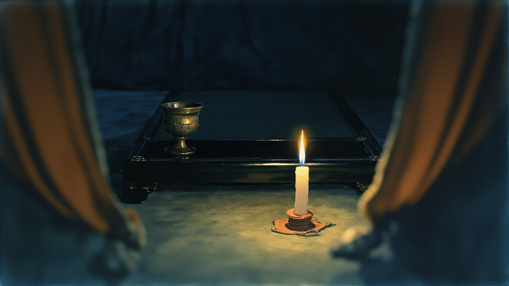
1. Subject: A bronze wine cup and a notched jade jue resting before an empty seat, in a Chu army command tent at Hongmen, Qin–Han transition China, 206 BCE. 2. Scene: Night deep inside the great campaign tent; the long black-lacquer table holds the two vessels before an unoccupied mat, one candle flame bent low by a cold draft. 3. Composition: Medium close-up, three-quarter view; the cup and jue sit in the left-center, filling about a third of the frame; foreground: blurred drape folds entering the lower corners; middle ground: the lacquer table, vessels and empty mat; background: candle glow fading into shadowed tent depth. 4. Lighting: A single warm candle flame at table level on the right, soft golden falloff, long cool shadows pooling into cobalt darkness toward the back of the tent. 5. Style: Watercolor illustration, transparent washes with soft pigment blooms and visible paper grain; heavy drapes in deep ochre and cobalt washes framing both edges; locked palette of cobalt blue, warm ochre, muted green and paper white. 6. Constraints: Keep the lower third clear — the table edge stops above the bottom band and the drapes hang as smooth dark washes; no people in fra watercolor illustration, transparent pigment washes, subtle paper grain, preserved readable foreground subject, cobalt blue warm ochre and muted green palette, soft directional light, atmospheric landscape kept secondary when a person is central, quiet lower third, no text, no letters, no labels, no handwriting
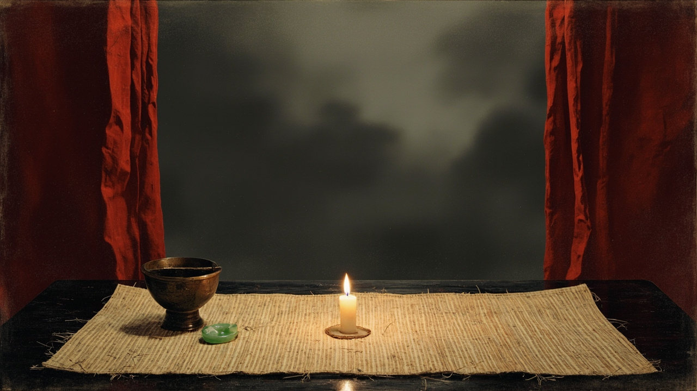
1. Subject: A bronze wine cup and a notched jade jue laid before an empty mat on a black-lacquered table; Hongmen, Chu army camp, China, 206 BCE. 2. Scene: Deep in the night commander's tent, the candle flame ducks low and rights itself in a draft; dark-red curtains hang down both frame edges. 3. Composition: Medium shot, still life centered, filling a third of the frame; foreground: inked bronze cup at lower left; middle ground: jade jue and empty reed mat; background: tent depth fading into gray mist. 4. Lighting: One candle at table level as the sole source, soft warm low glow, long shadows pooling away from the flame, cool gray ambient darkness rising above. 5. Style: Ink-wash on rice paper: black ink contours, layered gray washes, dry-brush texture, visible paper fibres; palette of black #202020, mist gray #AAA79F, rice-paper cream #F2EBDD, cinnabar #A84032; cinnabar reserved for the flame, curtains in dilute cinnabar wash. 6. Constraints: Keep the lower third and outer edges quiet for overlays; no readable text, seals or calligraphy; no people; no modern objects, glass or later-period metalware; the mat stays empty. expressive ink-wash painting, black brush contours and controlled gray washes on warm rice paper, readable foreground subject with clear silhouette and gesture, misty landscape kept subordinate, restrained cinnabar accent, generous negative space, quiet lower third, no text, no letters, no calligraphy, no seals
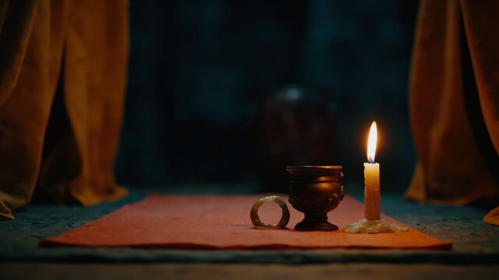
1. Subject: A bronze wine cup and a jade ring broken by a deliberate gap rest on a long low lacquer table before an empty banquet mat; Hongmen, Chu army camp, China, 206 BCE. 2. Scene: Deep inside a grand campaign tent at night; the candle flame bows low and rights itself in the draft, the guest's mat waits vacant, a watch drum beating faintly outside. 3. Composition: Low-angle medium shot, the vessels centered, filling a third of the frame. Foreground: heavy drapes hanging down both outer edges; middle ground: lacquer table, cup, jade, empty mat; background: a blurred war drum in the tent's shadows. 4. Lighting: One candle as the sole source, warm coral glow raking low across the tabletop, deep navy shadows rising behind; the flame tilted by a night draft. 5. Style: Clay stop-motion, matte hand-sculpted forms with visible fingerprints on bronze and jade, felted drapes, soft contact shadows; palette of warm cream #F1E5D2, muted teal #65968B, coral #D97862, deep navy #29374A, coral kept for the flame. 6. Constraints: Keep the lower third and bottom band plain for caption overlays; drapes taper off before the bottom edge. No people, no read handcrafted clay stop-motion scene, matte sculpted clay with subtle fingerprints, dimensional forms with readable faces and separated hands and limbs, clear subject silhouette, locked palette of warm cream muted teal coral and deep navy, soft directional studio light, shallow contact shadows, quiet lower third, no text, no letters, no labels
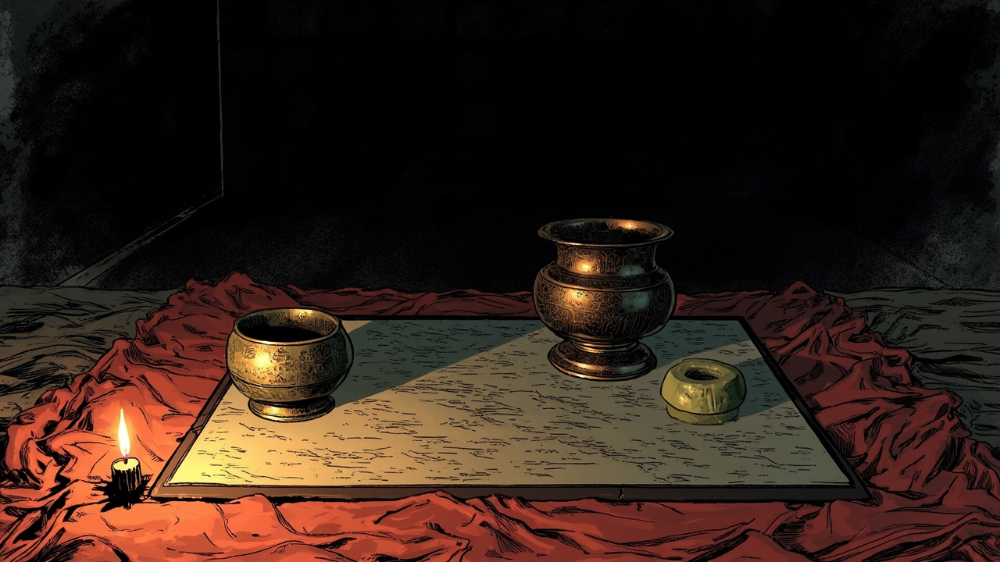
1. Subject: Hongmen Chu camp, 206 BCE late-Qin China; a bronze wine cup and a notched jade jue before an empty guest mat, no person visible. 2. Scene: deep in the commander's tent at night, a feast laid on the low lacquered table, guest seat empty; a candle flame bows and recovers in the night draft. 3. Composition: medium three-quarter shot along the tabletop, vessels in the left third; foreground: flat crimson drapes edging the frame; middle ground: table, empty mat, candle; background: tent wall lost in hatched darkness. 4. Lighting: a single candle on the table, camera right, warm low key with hard falloff — flame in paper white, shadows pooling to ink black. 5. Style: manga ink and screentone — confident black linework, controlled hatching, screentone gray falloff; palette ink black #171717, paper white #F4F1E8, cool gray #9B9B9B, muted crimson #A74343; matte lacquer, patinated bronze, translucent jade. 6. Constraints: keep the lower third quiet — no vessels or mat in the bottom band; drapes stay smooth at the edges; no people, no readable text or seals, no modern objects. manga ink illustration with controlled screentone, expressive black linework, one opaque full-frame scene, readable prominent character and clear pose, limited black white gray and muted crimson palette, no panel layout, no speech balloons, no captions, no sound effects, no page border, no checkerboard, no transparency, quiet lower third, no text, no letters
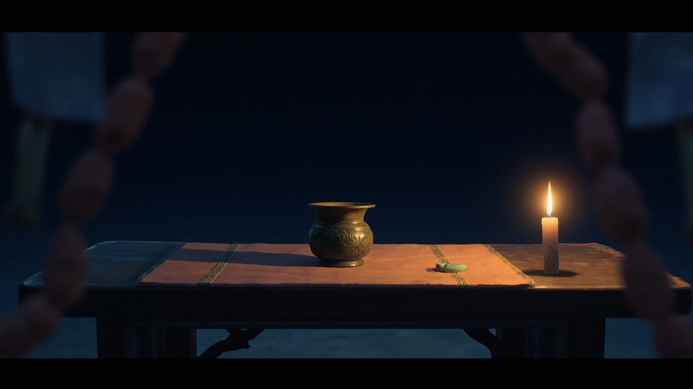
1. Subject: A bronze wine cup and a small notched jade jue lying before an empty mat, on a dark lacquered low table inside a Chu army banquet tent, China, 206 BCE. 2. Scene: Night deep inside the Hongmen campaign tent; the guest seat stays empty while a single candle flame bends low and rises again in a cold draft. 3. Composition: Medium shot, three-quarter view, the vessels centered filling a third of the frame; foreground: out-of-focus coral drapery hanging into the lower corners; middle ground: the low table, cup, jade and empty mat; background: tent depth fading into night blue. 4. Lighting: One table candle as the single source, warm flame light from camera right, the flame tilted by the draft, cool deep shadows swallowing the tent's interior. 5. Style: Polished 2D anime illustration, clean linework, confident cel shading, matte lacquered wood and aged bronze, palette of clear sky blue #59A6D6, sunny yellow #F0C64C, coral #E77D69, warm white #F7F2E8. 6. Constraints: Keep the lower third and outer edges quiet for caption overlays; no text or readable marks anywhere, no people in frame, no modern objects, no clutter intruding from the bright 2D anime illustration, confident cel shading and clean expressive linework, prominent readable character with clear face and pose, consistent character design, locked palette of sky blue sunny yellow coral and warm white, lively but uncluttered composition, quiet lower third, no text, no letters, no speech bubbles, no logos, no symbols
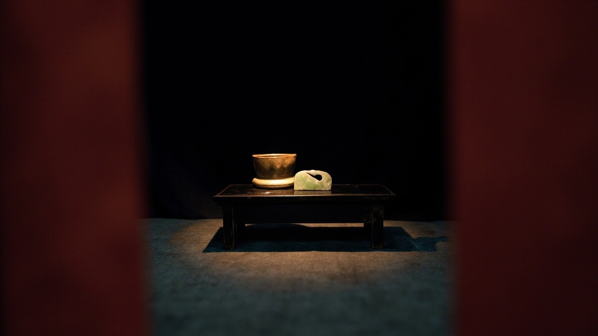
1. Subject: A bronze wine cup and a broken-gap jade arc pendant lying side by side before an empty floor seat at a low black-lacquered table — Hongmen, Chu army camp, China, 206 BCE. 2. Scene: Deep inside the felt command tent at night; the candle flame stoops low in a draft and steadies again; watch drums sound faintly beyond the curtain walls. 3. Composition: Medium close-up, the table filling the center-left two-thirds. Foreground: heavy burgundy drapes framing both frame edges; middle ground: cup, jade and empty seat on the table; background: tent depth sinking into flat ultramarine shadow. 4. Lighting: One candle on the table as the single source; warm antique-gold light pooling over bronze and jade, long soft shadows falling left, all else sunk in deep shadow. 5. Style: Medieval illuminated miniature, flattened perspective, fine gold contour lines, parchment-grain texture, solid matte fills; palette of parchment cream, ultramarine, burgundy and antique gold; matte bronze, softly polished jade, dark lacquer. 6. Constraints: Keep the lower third quiet and uncluttered for caption overlays; no people or hands; no wri medieval illuminated miniature illustration, flattened perspective, jewel-like ultramarine burgundy parchment cream and antique gold palette, historically grounded clothing and materials, prominent readable figures and action, sparse ornamental detail, no manuscript page, no border, no Latin, no pseudo-writing, no letters, no numbers, quiet lower third, no text
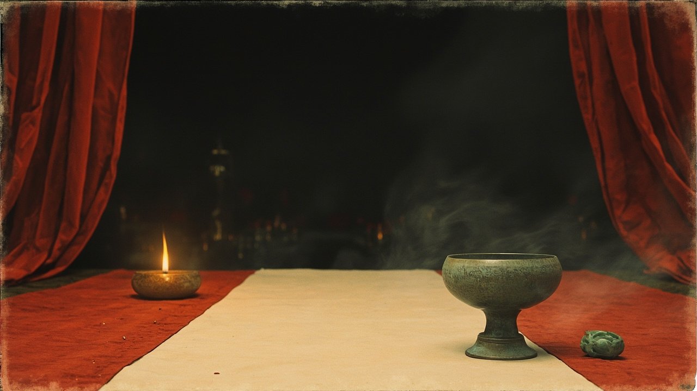
1. Subject: a bronze wine goblet and a notched jade jue resting before an empty banquet mat; late Qin China, 206 BCE, deep in the Chu army tent at Hongmen. 2. Scene: a winter-night feast laid and waiting, the guest's place vacant; one candle flame bends low and rights itself in the draft, watch drums faint outside. 3. Composition: medium close-up, slight low angle; goblet and jue in the right third, filling a third of the frame. Foreground: red curtains down both edges; middle ground: low table, goblet, jue, empty mat; background: distant feast tables in shadow. 4. Lighting: one warm candle flame camera-left, unsteady glow lifting the bronze and jade, the tent's depth sinking into cool darkness. 5. Style: gongbi light-colour wash, fine ink linework, layered low-saturation washes, aged-paper grain; palette of aged paper #E8E0CF, ink black #242521, smoke grey #77786F, ochre #B38A56 bronze and flame, cinnabar #A54A3D drapery. 6. Constraints: keep the lower third a plain quiet table surface for caption overlays; no people, no legible writing or seals, no modern objects, no clutter beyond the curtain edges. gongbi light-colour wash illustration, restrained fine ink linework, low-saturation layered washes, one full-frame scene, aged paper and ink palette with slate blue-green or ochre and a little cinnabar red, credible period dress, simplified distance, quiet lower third, no panel layout, no collage, no calligraphy, no seals, no signature, no text, no letters
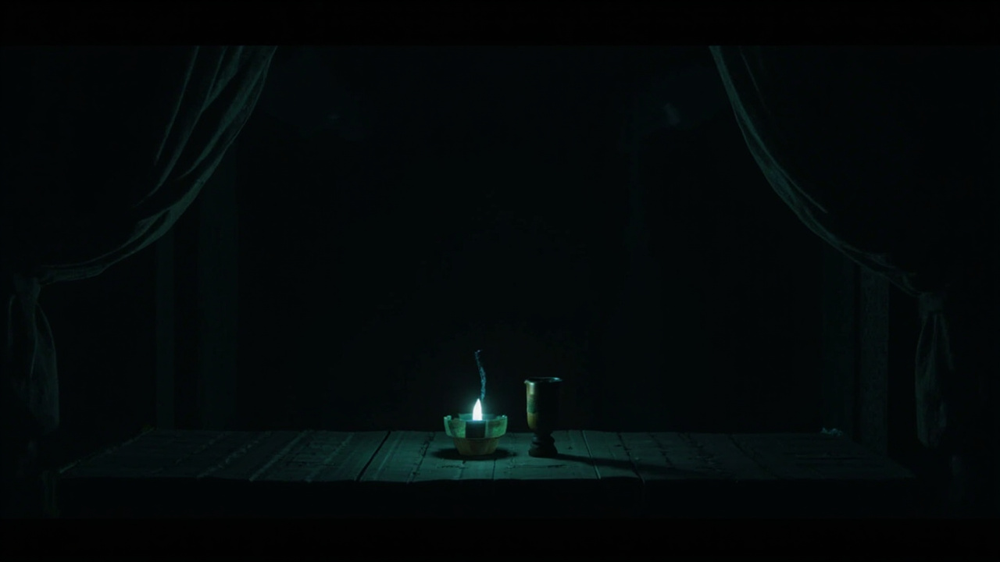
1. Subject: A bronze wine goblet and a notched jade jue on a long lacquer table before an empty seat; late Qin China, 206 BCE, Chu war camp at Hongmen. 2. Scene: Deep inside the great campaign tent at night, the banquet paused; a candle flame bends low and rises again in a draft, heavy drapes hanging down both frame edges. 3. Composition: Centered medium shot, vessels in the middle third. Foreground: dim near edge of the table; middle ground: goblet, jue and bending flame; background: drape columns fading to a faint tent flap. 4. Lighting: The candle flame is the sole light source, phosphor-green and soft-cyan glow radiating into the void; no external light, no shadows beyond soft glow. 5. Style: Terminal console illustration, black CRT screen: ASCII-box drape columns, dense illegible glyphs, scan lines; palette deep screen black #0B0F14, phosphor green #33FF66, soft cyan #66E5FF, dim grey #3A4148, void #060A0E. 6. Constraints: Lower third quiet for captions; outer edges plain dim drapes only. No people in frame, no readable text or glyphs, no waterm terminal console illustration, dark CRT screen with phosphor-green and soft cyan glow, ASCII box borders and command-prompt motifs, subtle scan-line texture and faint vignette, ascii arrows and file-tree hints, locked palette of deep screen black phosphor green soft cyan dim grey and surrounding void, generous negative space, quiet lower third, no text, no readable letters, no words, no labels, no signs, no captions, no UI chrome